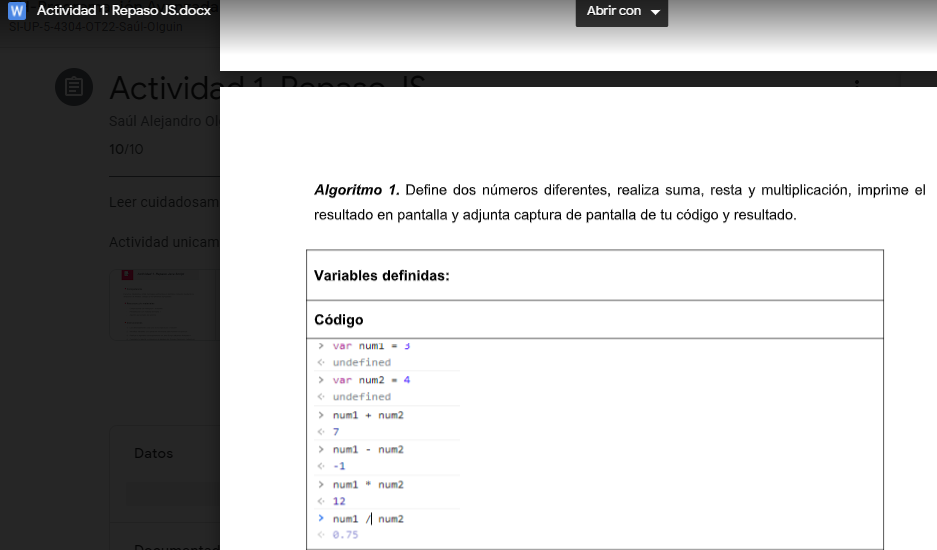
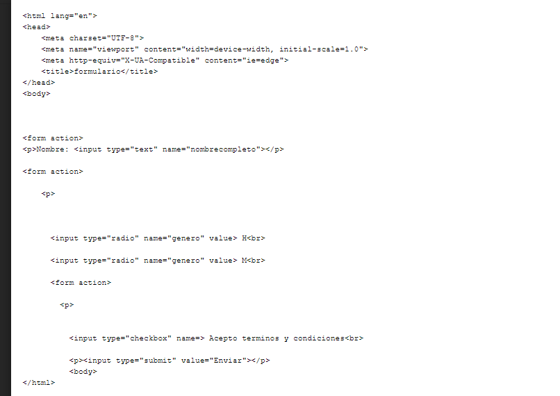
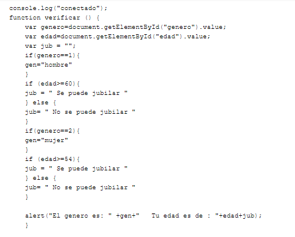
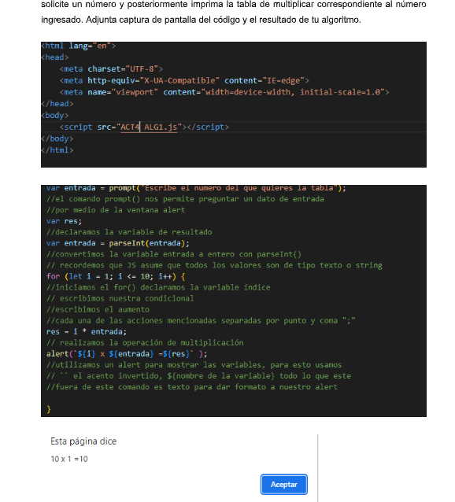
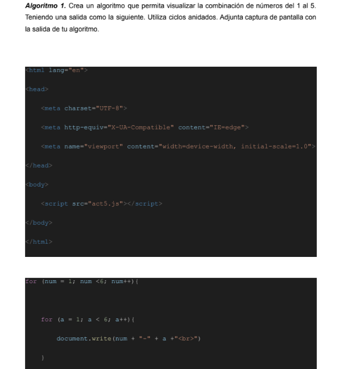
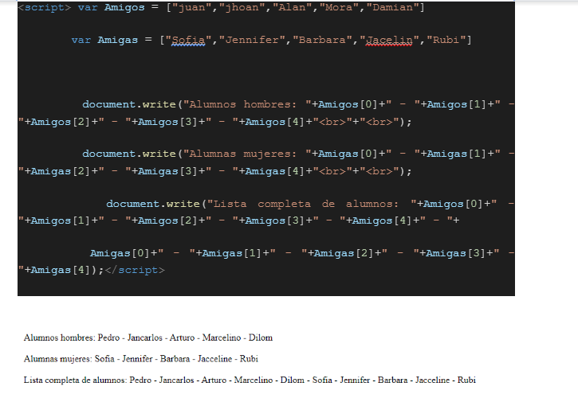
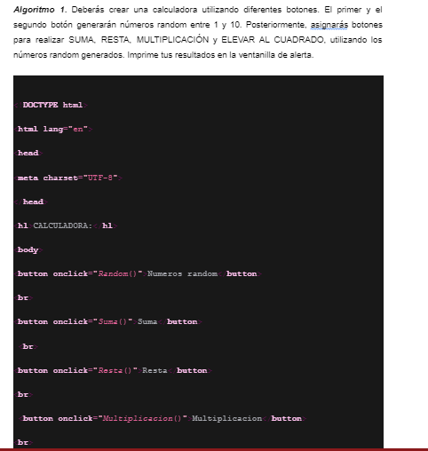
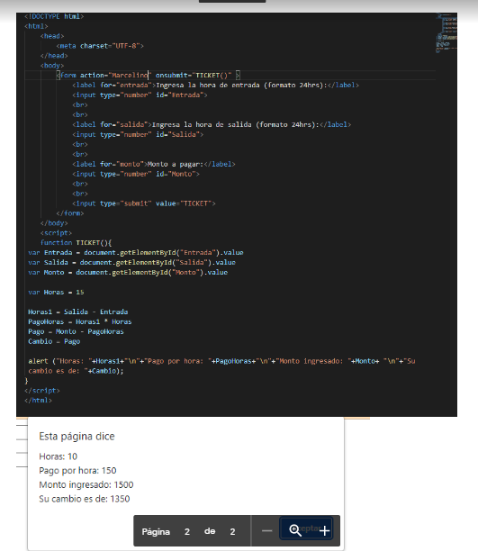
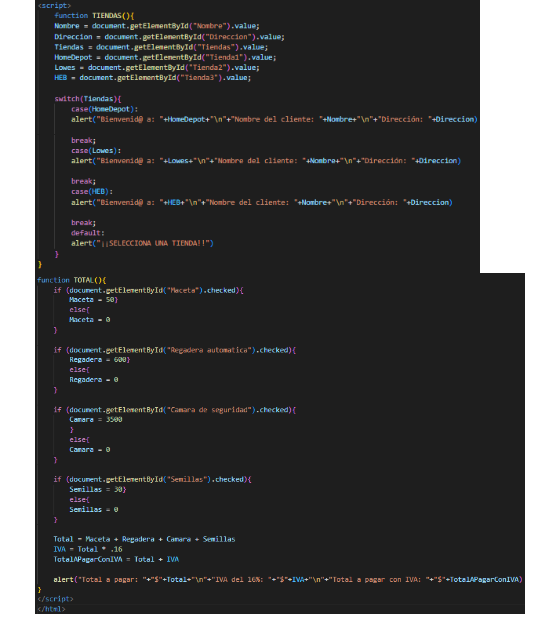

Act 1: Aqui en esta actiividad lo que ise fue poner 2 numeros diferente y que con esos 2 numeros pudiera hacer las operaciones basicas y el resultado me lo imprimiera. resultado en pantalla y adjunta captura de pantalla de tu código y resultado.
Act2: Aqui lo que isimos fue crear formularios con entradas con 2 numeros para igual que la actividad pasada hacer operaciones de suma y multiplicacion y imprimir lo echo en un alert.
Act3: Aqui igual seguimos con formularios y aqui tenemos que poner datos al usuario y tambias ponerle estructuras condicionales como el if; else; y al resultado que me lo imprima en un alert.
Act4: Aqui lo que isimos fue un algoritmo en java script con la ventanilla de consola nos solicite un numero y que cuando pongamos ese numero nos imprima la tabla de multiplicar
Act5: Lo que icimos aqui fue crear un algoritmo que visualice una combinacion del 1 al 5, utilizamos siclos aminados
Avt6: Aqui lo que isimos fue definir arreglos, lo que isimos basicamente fue poner nombres y que me los imprimiera
Act7: Lo que ise aqui fue crear una calculadora con diferentes botones, que uno generara numeros random del 1 al 10 y asigne unos botones tambienpara realizar operaciones y imprimir los resultados.
Act8: Crea un formulario basado en un cajero automático de un estacionamiento. El formulario deberá permitir ingresar la hora de entrada y de salida. Posteriormente, pide el monto con el que el cliente desea pagar e imprime el cambio. Considera lo siguiente: aqui cree un formulario que era tematica de cajero automatico de un estacionamiento, tenia que ingresar la hora de entrada y de salida y pedia tambien el monto con el pago y imprimimos el cambio.
Act9: aqui lo que isimos fue un selec en cual nos tendria que dar la chanse de elegir una de las 3 tiendas y realice una compra con el iva y total.
